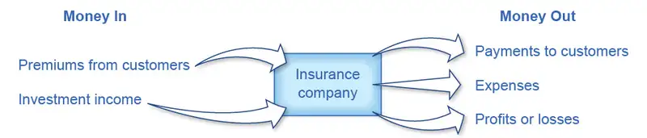

Chapter 16: Information, Risk, and Insurance¶
Introduction¶
Bring It Home: What’s the Big Deal with Obamacare?
In August 2009, many members of the U.S. Congress used their summer recess to return to their home districts and hold town hall-style meetings to discuss President Obama’s proposed changes to the U.S. healthcare system. This was officially known as the Patient Protection and Affordable Care Act (PPACA) or as the Affordable Care Act (ACA), but was more popularly known as Obamacare. The bill’s opponents’ claims ranged from the charge that the changes were unconstitutional and would add $750 billion to the deficit, to extreme claims about the inclusion of things like the implantation of microchips and so-called “death panels” that decide which critically-ill patients receive care and which do not.
Why did people react so strongly? After all, the intent of the law is to make healthcare insurance more affordable, to allow more people to obtain insurance, and to reduce the costs of healthcare. For each year from 2000 to 2011, these costs grew at least double the rate of inflation. In 2014, healthcare spending accounted for around 24% of all federal government spending. In the United States, we spend more for our healthcare than any other high-income nation, yet our health outcomes are worse than comparable high-income countries. In 2015, over 32 million people in the United States, about 12.8% of the non-elderly adult population, were without insurance. Even today, however, more than a decade after the Act was signed into law and after the Supreme Court mostly upheld it, a 2022 Kaiser Foundation poll found that 42% of likely voters viewed it unfavorably. Why is this?
The debate over the ACA and healthcare reform could take an entire textbook, but what this chapter will do is introduce the basics of insurance and the problems insurance companies face. It is these problems, and how insurance companies respond to them that, in part, explain the divided opinion about the ACA.
Chapter Outline: Introduction to Information, Risk, and Insurance
In this chapter, you will learn about:
- The Problem of Imperfect Information and Asymmetric Information
- Insurance and Imperfect Information
Every purchase is based on a belief about the satisfaction that the good or service will provide. In turn, these beliefs are based on the information that the buyer has available. For many products, the information available to the buyer or the seller is imperfect or unclear, which can either make buyers regret past purchases or avoid making future ones.
This chapter discusses how imperfect and asymmetric information affect markets. The first module of the chapter discusses how asymmetric information affects markets for goods, labor, and financial capital. When buyers have less information about the quality of the good (for example, a gemstone) than sellers do, sellers may be tempted to mislead buyers. If a buyer cannot have at least some confidence in the quality of what they are purchasing, then they will be reluctant or unwilling to purchase the products. Thus, we require mechanisms to bridge this information gap, so buyers and sellers can engage in a transaction.
The second module of the chapter discusses insurance markets, which also face similar problems of imperfect information. For example, a car insurance company would prefer to sell insurance only to those who are unlikely to have auto accidents—but it is hard for the firm to identify those perfectly safe drivers. Conversely, car insurance buyers would like to persuade the auto insurance company that they are safe drivers and should pay only a low price for coverage. If insurance markets cannot find ways to grapple with these problems of imperfect information, then even people who have low or average risks of making claims may not be able to purchase insurance. The chapter on financial markets (markets for stocks and bonds) will show that the problems of imperfect information can be especially poignant. We cannot eliminate imperfect information, but we can often manage it.
16.1 The Problem of Imperfect Information and Asymmetric Information¶
Learning Objectives
By the end of this section, you will be able to:
- Analyze the impact of both imperfect information and asymmetric information
- Evaluate the role of advertisements in creating imperfect information
- Identify ways to reduce the risk of imperfect information
- Explain how imperfect information can affect price, quantity, and quality
Consider a purchase that many people make at important times in their lives: buying expensive jewelry. In May 1994, celebrity psychologist Doree Lynn bought an expensive ring from a jeweler in Washington, D.C., which included an emerald that cost $14,500. Several years later, the emerald fractured. Lynn took it to another jeweler who found that cracks in the emerald had been filled with an epoxy resin. Lynn sued the original jeweler in 1997 for selling her a treated emerald without telling her, and won. The case publicized a number of little-known facts about precious stones. Most emeralds have internal flaws, and so they are soaked in clear oil or an epoxy resin to hide the flaws and make the color more deep and clear. Clear oil can leak out over time, and epoxy resin can discolor with age or heat. However, using clear oil or epoxy to “fill” emeralds is completely legal, as long as it is disclosed.
After Doree Lynn’s lawsuit, the NBC news show “Dateline” bought emeralds at four prominent jewelry stores in New York City in 1997. All the sales clerks at these stores, unaware that they were being recorded on a hidden camera, said the stones were untreated. When the emeralds were tested at a laboratory, however, technicians discovered they had all been treated with oil or epoxy. Emeralds are not the only gemstones that are treated. Diamonds, topaz, and tourmaline are also often irradiated to enhance colors. The general rule is that all treatments to gemstones should be revealed, but often sellers do not disclose this. As such, many buyers face a situation of asymmetric information, where two parties involved in an economic transaction have an unequal amount of information (one party knows much more than the other).
Many economic transactions occur in a situation of imperfect information, where either the buyer, the seller, or both, are less than 100% certain about the qualities of what they are buying and selling. Also, one may characterize the transaction as asymmetric information, in which one party has more information than the other regarding the economic transaction. Let’s begin with some examples of how imperfect information complicates transactions in goods, labor, and financial capital markets. The presence of imperfect information can easily cause a decline in prices or quantities of products sold. However, buyers and sellers also have incentives to create mechanisms that will allow them to make mutually beneficial transactions even in the face of imperfect information.
If you are unclear about the difference between asymmetric information and imperfect information, read the following Clear It Up feature.
Clear It Up: What is the difference between imperfect and asymmetric information?
For a market to reach equilibrium sellers and buyers must have full information about the product’s price and quality. If there is limited information, then buyers and sellers may not be able to transact or will possibly make poor decisions.
Imperfect information refers to the situation where buyers and/or sellers do not have all of the necessary information to make an informed decision about the product's price or quality. The term imperfect information simply means that the buyers and/or sellers do not have all the information necessary to make an informed decision. Asymmetric information is the condition where one party, either the buyer or the seller, has more information about the product's quality or price than the other party. In either case (imperfect or asymmetric information) buyers or sellers need remedies to make more informed decisions.
“Lemons” and Other Examples of Imperfect Information¶
Consider Marvin, who is trying to decide whether to buy a used car. Let’s assume that Marvin is truly clueless about what happens inside a car’s engine. He is willing to do some background research, like reading Consumer Reports or checking websites that offer information about used car makes and models and what they should cost. He might pay a mechanic to inspect the car. Even after devoting some money and time collecting information, however, Marvin still cannot be absolutely sure that he is buying a high-quality used car. He knows that he might buy the car, drive it home, and use it for a few weeks before discovering that car is a “lemon,” which is slang for a defective product (especially a car).
Imagine that Marvin shops for a used car and finds two that look very similar in terms of mileage, exterior appearances, and age. One car costs $4,000, while the other car costs $4,600. Which car should Marvin buy?
If Marvin were choosing in a world of perfect information, the answer would be simple: he should buy the cheaper car. However, Marvin is operating in a world of imperfect information, where the sellers likely know more about the car’s problems than he does, and have an incentive to hide the information. After all, the more problems the sellers disclose, the lower the car’s selling price.
What should Marvin do? First, he needs to understand that even with imperfect information, prices still reflect information. Typically, used cars are more expensive on some dealer lots because the dealers have a trustworthy reputation to uphold. Those dealers try to fix problems that may not be obvious to their customers, in order to create good word of mouth about their vehicles’ long term reliability. The short term benefits of selling their customers a “lemon” could cause a quick collapse in the dealer’s reputation and a loss of long term profits. On other lots that are less well-established, one can find cheaper used cars, but the buyer takes on more risk when a dealer’s reputation has little at stake. The cheapest cars of all often appear on Craigslist, where the individual seller has no reputation to defend. In sum, cheaper prices do carry more risk, so Marvin should balance his appetite for risk versus the potential headaches of many more unanticipated trips to the repair shop.
Similar problems with imperfect information arise in labor and financial capital markets. Consider Greta, who is applying for a job. Her potential employer, like the used car buyer, is concerned about ending up with a “lemon”—in this case a poor quality employee. The employer will collect information about Greta’s academic and work history. In the end, however, a degree of uncertainty will inevitably remain regarding Greta’s abilities, which are hard to demonstrate without actually observing her on the job. How can a potential employer screen for certain attributes, such as motivation, timeliness, and ability to get along with others? Employers often look to trade schools and colleges to pre-screen candidates. Employers may not even interview a candidate unless he has a degree and, sometimes, a degree from a particular school. Employers may also view awards, a high grade point average, and other accolades as a signal of hard work, perseverance, and ability. Employers may also seek references for insights into key attributes such as energy level and work ethic.
How Imperfect Information Can Affect Equilibrium Price and Quantity¶
The presence of imperfect information can discourage both buyers and sellers from participating in the market. Buyers may become reluctant to participate because they cannot determine the product's quality. Sellers of high-quality or medium-quality goods may be reluctant to participate, because it is difficult to demonstrate the quality of their goods to buyers—and since buyers cannot determine which goods have higher quality, they are likely to be unwilling to pay a higher price for such goods.
Economists sometimes refer to a market with few buyers and few sellers as a thin market. By contrast, they call a market with many buyers and sellers a thick market. When imperfect information is severe and buyers and sellers are discouraged from participating, markets may become extremely thin as a relatively small number of buyer and sellers attempt to communicate enough information that they can agree on a price.
When Price Mixes with Imperfect Information about Quality¶
A buyer confronted with imperfect information will often believe that the price reveals something about the product's quality. For example, a buyer may assume that a gemstone or a used car that costs more must be of higher quality, even though the buyer is not an expert on gemstones. Think of the expensive restaurant where the food must be good because it is so expensive or the shop where the clothes must be stylish because they cost so much, or the gallery where the art must be great, because the price tags are high. If you are hiring a lawyer, you might assume that a lawyer who charges $400 per hour must be better than a lawyer who charges $150 per hour. In these cases, price can act as a signal of quality.
When buyers use the market price to draw inferences about the products' quality, then markets may have trouble reaching an equilibrium price and quantity. Imagine a situation where a used car dealer has a lot full of used cars that do not seem to be selling, and so the dealer decides to cut the car prices to sell a greater quantity. In a market with imperfect information, many buyers may assume that the lower price implies low-quality cars. As a result, the lower price may not attract more customers. Conversely, a dealer who raises prices may find that customers assume that the higher price means that cars are of higher quality. As a result of raising prices, the dealer might sell more cars. (Whether or not consumers always behave rationally, as an economist would see it, is the subject of the following Clear It Up feature.)
The idea that higher prices might cause a greater quantity demanded and that lower prices might cause a lower quantity demanded runs exactly counter to the basic model of demand and supply (as we outlined in the Demand and Supply chapter). These contrary effects, however, will reach natural limits. At some point, if the price is high enough, the quantity demanded will decline. Conversely, when the price declines far enough, buyers will increasingly find value even if the quality is lower. In addition, information eventually becomes more widely known. An overpriced restaurant that charges more than the quality of its food is worth to many buyers will not last forever.
Clear It Up: Is consumer behavior rational?
There is much human behavior that mainstream economists have tended to call “irrational” since it is consistently at odds with economists’ utility maximizing models. The typical response is for economists to brush these behaviors aside and call them “anomalies” or unexplained quirks.
“If only you knew more economics, you would not be so irrational,” is what many mainstream economists seem to be saying. A group known as behavioral economists has challenged this notion, because so much of this so-called “quirky” behavior is extremely common among us. For example, a conventional economist would say that if you lost a $10 bill today, and also received an extra $10 in your paycheck, you should feel perfectly neutral. After all, –$10 + $10 = $0. You are the same financially as you were before. However, behavioral economists have conducted research that shows many people will feel some negative emotion—anger or frustration—after those two things happen. We tend to focus more on the loss than the gain. Economists Daniel Kahneman and Amos Tversky in a famous 1979 Econometrica paper called this "loss aversion", where a $1 loss pains us 2.25 times more than a $1 gain helps us. This has implications for investing, as people tend to “overplay” the stock market by reacting more to losses than to gains.
Behavioral economics also tries to explain why people make seemingly irrational decisions in the presence of different situations, or how they "frame" the decision. We outline a popular example here: Imagine you have the opportunity to buy an alarm clock for $20 in Store A. Across the street, you learn, is the exact same clock at Store B for $10. You might say it is worth your time—a five-minute walk—to save $10. Now, take a different example: You are in Store A buying a $300 phone. Five minutes away, at Store B, the same phone is $290. You again save $10 by taking a five-minute walk. Do you do it?
Surprisingly, it is likely that you would not. Mainstream economists would say “$10 is $10” and that it would be irrational to make a five minute walk for $10 in one case and not the other. However, behavioral economists have pointed out that most of us evaluate outcomes relative to a reference point—here the cost of the product—and think of gains and losses as percentages rather than using actual savings.
Which view is right? Both have their advantages, but behavioral economists have at least shed a light on trying to describe and explain systematic behavior which some previously had dismissed as irrational. If most of us are engaged in some “irrational behavior,” perhaps there are deeper underlying reasons for this behavior in the first place.
Mechanisms to Reduce the Risk of Imperfect Information¶
If you were selling a good like emeralds or used cars where imperfect information is likely to be a problem, how could you reassure possible buyers? If you were buying a good where imperfect information is a problem, what would it take to reassure you? Buyers and sellers in the goods market rely on reputation as well as guarantees, warrantees, and service contracts to assure product quality. The labor market uses occupational licenses and certifications to assure competency, while the financial capital market uses cosigners and collateral as insurance against unforeseen, detrimental events.
In the goods market, the seller might offer a money-back guarantee, an agreement that functions as a promise of quality. This strategy may be especially important for a company that sells goods through mail-order catalogs or over the web, whose customers cannot see the actual products, because it encourages people to buy something even if they are not certain they want to keep it.
L.L. Bean started using money-back-guarantees in 1911, when the founder stitched waterproof shoe rubbers together with leather shoe tops, and sold them as hunting shoes. He guaranteed satisfaction. However, the stitching came apart and, out of the first batch of 100 pairs that were sold, customers returned 90 pairs. L.L. Bean took out a bank loan, repaired all of the shoes, and replaced them. The L.L. Bean reputation for customer satisfaction began to spread. Many firms today offer money-back-guarantees for a few weeks or months, but L.L. Bean offers a one year money-back guarantee. In the past, L.L. Bean offered a lifetime money-back guarantee, which allowed customers to always return anything they had bought from L.L. Bean, no matter how many years later or what condition the product was in, for a full refund.
L.L. Bean has very few stores. Instead, most of its sales are made by mail, telephone, or, now, through their website. For this kind of firm, imperfect information may be an especially difficult problem, because customers cannot see and touch what they are buying. A combination of a money-back guarantee and a reputation for quality can help for a mail-order firm to flourish.
Sellers may offer a warranty, which is a promise to fix or replace the good, at least for a certain time period. The seller may also offer a buyer a chance to buy a service contract, where the buyer pays an extra amount and the seller agrees to fix anything that goes wrong for a set time period. Service contracts are often an option for buyers of large purchases such as cars, appliances and even houses.
Guarantees, warranties, and service contracts are examples of explicit reassurance that sellers provide. In many cases, firms also offer unstated guarantees. For example, some movie theaters might refund the ticket cost to a customer who walks out complaining about the show. Likewise, while restaurants do not generally advertise a money-back guarantee or exchange policies, many restaurants allow customers to exchange one dish for another or reduce the price of the bill if the customer is not satisfied.
The rationale for these policies is that firms want repeat customers, who in turn will recommend the business to others. As such, establishing a good reputation is of paramount importance. When buyers know that a firm is concerned about its reputation, they are less likely to worry about receiving a poor-quality product. For example, a well-established grocery store with a good reputation can often charge a higher price than a temporary stand at a local farmer’s market, where the buyer may never see the seller again.
Sellers of labor provide information through resumes, recommendations, school transcripts, and examples of their work. The labor market also uses occupational licenses to establish quality in the labor market. Occupational licenses, which government agencies typically issue, show that a worker has completed a certain type of education or passed a certain test. Some of the professionals who must hold a license are doctors, teachers, nurses, engineers, accountants, and lawyers. In addition, most states require a license to work as a barber, an embalmer, a dietitian, a massage therapist, a hearing aid dealer, a counselor, an insurance agent, and a real estate broker. Some other jobs require a license in only one state. Minnesota requires a state license to be a field archaeologist. North Dakota has a state license for bait retailers. In Louisiana, one needs a state license to be a “stress analyst” and California requires a state license to be a furniture upholsterer. According to a 2013 study from the University of Chicago, about 29% of U.S. workers have jobs that require occupational licenses.
Occupational licenses have their downside as well, as they represent a barrier to entry to certain industries. This makes it more difficult for new entrants to compete with incumbents, which can lead to higher prices and less consumer choice. In occupations that require licenses, the government has decided that the additional information provided by licenses outweighs the negative effect on competition.
Clear It Up: Are advertisers allowed to benefit from imperfect information?
Many advertisements seem full of imperfect information—at least by what they imply. Driving a certain car, drinking a particular soda, or wearing a certain shoe are all unlikely to bring fashionable friends and fun automatically, if at all. The government rules on advertising, enforced by the Federal Trade Commission (FTC), allow advertising to contain a certain amount of exaggeration about the general delight of using a product. They, however, also demand that if one presents a claim as a fact, it must be true.
Legally, deceptive advertising dates back to the 1950s when Colgate-Palmolive created a television advertisement that seemed to show Rapid Shave shaving cream being spread on sandpaper and then the sand was shaved off the sandpaper. What the television advertisement actually showed was sand sprinkled on Plexiglas—without glue—and then scraped aside by the razor.
In the 1960s, in magazine advertisements for Campbell’s vegetable soup, the company was having problems getting an appetizing soup picture, because the vegetables kept sinking. To remedy this, they filled a bowl with marbles and poured the soup over the top, so that the bowl appeared to be crammed with vegetables.
In the late 1980s, the Volvo Company filmed a television advertisement that showed a monster truck driving over cars, crunching their roofs—all except for the Volvo, which did not crush. However, the FTC found in 1991 that the Volvo's roof from the filming had been reinforced with an extra steel framework, while they cut the roof supports on the other car brands.
The Wonder Bread Company ran television advertisements featuring “Professor Wonder,” who said that because Wonder Bread contained extra calcium, it would help children’s minds work better and improve their memory. The FTC objected, and in 2002 the company agreed to stop running the advertisements.
As we can see in each of these cases, the Federal Trade Commission (FTC) often checks factual claims about the product’s performance, at least to some extent. Language and images that are exaggerated or ambiguous, but not actually false, are allowed in advertising. Untrue “facts” are not permitted. In any case, an old Latin saying applies when watching advertisements: Caveat emptor—that is, “let the buyer beware.”
On the buyer’s side of the labor market, a standard precaution against hiring a “lemon” of an employee is to specify that the first few months of employment are officially a trial or probationary period, and that the employer can dismiss the worker for any reason or no reason during that time. Sometimes workers also receive lower pay during this trial period.
In the financial capital market, before a bank makes a loan, it requires a prospective borrower to fill out forms regarding incomes sources. In addition, the bank conducts a credit check on the individual’s past borrowing. Another approach is to require a cosigner on a loan; that is, another person or firm who legally pledges to repay some or all of the money if the original borrower does not do so. Another approach is to require collateral, often property or equipment that the bank would have a right to seize and sell if borrower does not repay the loan.
Buyers of goods and services cannot possibly become experts in evaluating the quality of gemstones, used cars, lawyers, and everything else they buy. Employers and lenders cannot be perfectly omniscient about whether possible workers will turn out well or potential borrowers will repay loans on time. However, the mechanisms that we mentioned above can reduce the risks associated with imperfect information so that the buyer and seller are willing to proceed.
16.2 Insurance and Imperfect Information¶
Learning Objectives
By the end of this section, you will be able to:
- Explain how insurance works
- Identify and evaluate various forms of government and social insurance
- Discuss the problems caused by moral hazard and adverse selection
- Analyze the impact of government regulation of insurance
Insurance is a method that households and firms use to prevent any single event from having a significant detrimental financial effect. Generally, households or firms with insurance make regular payments, called premiums. The insurance company prices these premiums based on the probability of certain events occurring among a pool of people. Members of the group who then suffer a specified bad experience receive payments from this pool of money.
Many people have several kinds of insurance: health insurance that pays when they receive medical care; car insurance that pays if their car is in an automobile accident; house or renter’s insurance that pays for stolen possessions or items damaged by fire; and life insurance, which pays for the family if the insured individual dies. Table 16.1 lists a set of insurance markets.
Table 16.1 Some Insurance Markets
| Type of Insurance | Who Pays for It? | It Pays Out When . . . |
|---|---|---|
| Health insurance | Employers and individuals | Medical expenses are incurred |
| Life insurance | Employers and individuals | Policyholder dies |
| Automobile insurance | Individuals | Car is damaged, stolen, or causes damage to others |
| Property and homeowner’s insurance | Homeowners and renters | Dwelling is damaged or burglarized |
| Liability insurance | Firms and individuals | An injury occurs for which you are partly responsible |
| Malpractice insurance | Doctors, lawyers, and other professionals | A poor quality of service is provided that causes harm to others |
All insurance involves imperfect information in both an obvious way and in a deeper way. At an obvious level, we cannot predict future events with certainty. For example, we cannot know with certainty who will have a car accident, become ill, die, or have his home robbed in the next year. Imperfect information also applies to estimating the risk that something will happen to any individual. It is difficult for an insurance company to estimate the risk that, say, a particular 20-year-old male driver from New York City will have an accident, because even within that group, some drivers will drive more safely than others. Thus, adverse events occur out of a combination of people’s characteristics and choices that make the risks higher or lower and then the good or bad luck of what actually happens.
How Insurance Works¶
A simplified example of automobile insurance might work this way. Suppose we divide a group of 100 drivers into three groups. In a given year, 60 of those people have only a few door dings or chipped paint, which costs $100 each. Another 30 of the drivers have medium-sized accidents that cost an average of $1,000 in damages, and 10 of the drivers have large accidents that cost $15,000 in damages. For the moment, let’s imagine that at the beginning of any year, there is no way of identifying the drivers who are low-risk, medium-risk, or high-risk. The total damage incurred by car accidents in this group of 100 drivers will be $186,000, that is:
If each of the 100 drivers pays a $1,860 premium each year, the insurance company will collect the $186,000 that is needed to cover the costs of the accidents that occur.
Since insurance companies have such a large number of clients, they are able to negotiate with health care and other service providers for lower rates than the individual would be able to get, thus increasing the benefit to consumers of becoming insured and saving the insurance company itself money when it pays out claims.
Insurance companies receive income, as Figure 16.2 shows, from insurance premiums and investment income. The companies derive income from investing the funds that insurance companies received in the past but did not pay out as insurance claims in prior years. The insurance company receives a rate of return from investing these funds or reserves. The companies typically invest in fairly safe, liquid (easy to convert into cash) investments, as the insurance companies need to be able to readily access these funds when a major disaster strikes.

Government and Social Insurance¶
Federal and state governments run a number of insurance programs. Some of the programs look much like private insurance, in the sense that the members of a group make steady payments into a fund, and those in the group who suffer an adverse experience receive payments. Other programs protect against risk, but without an explicit fund set up. Following are some examples.
- Unemployment insurance: Employers in every state pay a small amount for unemployment insurance, which goes into a fund to pay benefits to workers who lose their jobs and do not find new jobs, for a period of time, usually up to six months.
- Pension insurance: Employers that offer pensions to their retired employees are required by law to pay a small fraction of what they are setting aside for pensions to the Pension Benefit Guarantee Corporation, which pays at least some pension benefits to workers if a company goes bankrupt and cannot pay the pensions it has promised.
- Deposit insurance: Banks are required by law to pay a small fraction of their deposits to the Federal Deposit Insurance Corporation, which goes into a fund that pays depositors the value of their bank deposits up to $250,000 (the amount was raised from $100,000 to $250,000 in 2008) if the bank should go bankrupt.
- Workman’s compensation insurance: Employers are required by law to pay a small percentage of the salaries that they pay into funds, typically run at the state level, that pay benefits to workers who suffer an injury on the job.
- Retirement insurance: All workers pay a percentage of their income into Social Security and into Medicare, which then provides income and health care benefits to the elderly. Social Security and Medicare are not literally “insurance” in the sense that those currently contributing to the fund are not eligible for benefits. They function like insurance, however, in the sense that individuals make regular payments into the programs today in exchange for benefits they will receive in the case of a later event—either becoming old or becoming sick when old. A name for such programs is “social insurance.”
The major additional costs to insurance companies, other than the payment of claims, are the costs of running a business: the administrative costs of hiring workers, administering accounts, and processing insurance claims. For most insurance companies, the insurance premiums coming in and the claims payments going out are much larger than the amounts earned by investing money or the administrative costs.
Thus, while factors like investment income earned on reserves, administrative costs, and groups with different risks complicate the overall picture, a fundamental law of insurance must hold true: The average person’s payments into insurance over time must cover 1) the average person’s claims, 2) the costs of running the company, and 3) leave room for the firm’s profits.
Risk Groups and Actuarial Fairness¶
Not all of those who purchase insurance face the same risks. Some people may be more likely, because of genetics or personal habits, to fall sick with certain diseases. Some people may live in an area where car theft or home robbery is more likely than in other areas. Some drivers are safer than others. A risk group can be defined as a group that shares roughly the same risks of an adverse event occurring.
Insurance companies often classify people into risk groups, and charge lower premiums to those with lower risks. If people are not separated into risk groups, then those with low risk must pay for those with high risks. In the simple example of how car insurance works, 60 drivers had very low damage of $100 each, 30 drivers had medium-sized accidents that cost $1,000 each, and 10 of the drivers had large accidents that cost $15,000. If all 100 of these drivers pay the same $1,860, then those with low damages are in effect paying for those with high damages.
If it is possible to classify drivers according to risk group, then the insurance company can charge each group according to its expected losses. For example, the insurance company might charge the 60 drivers who seem safest of all $100 apiece, which is the average value of the damages they cause. Then the intermediate group could pay $1,000 apiece and the high-cost group $15,000 each. When the level of insurance premiums that someone pays is equal to the amount that an average person in that risk group would collect in insurance payments, the level of insurance is said to be “actuarially fair.”
Classifying people into risk groups can be controversial. For example, if someone had a major automobile accident last year, should the insurance company classify that person as a high-risk driver who is likely to have similar accidents in the future, or as a low-risk driver who was just extremely unlucky? The driver is likely to claim to be low-risk, and thus someone who should be in a risk group with those who pay low insurance premiums in the future. The insurance company is likely to believe that, on average, having a major accident is a signal of being a high-risk driver, and thus try to charge this driver higher insurance premiums. The next two sections discuss the two major problems of imperfect information in insurance markets—called moral hazard and adverse selection. Both problems arise from attempts to categorize those purchasing insurance into risk groups.
The Moral Hazard Problem¶
Moral hazard refers to the case when people engage in riskier behavior with insurance than they would if they did not have insurance. For example, if you have health insurance that covers the cost of visiting the doctor, you may be less likely to take precautions against catching an illness that might require a doctor’s visit. If you have car insurance, you will worry less about driving or parking your car in ways that make it more likely to get dented. In another example, a business without insurance might install absolute top-level security and fire sprinkler systems to guard against theft and fire. If it is insured, that same business might only install a minimum level of security and fire sprinkler systems.
We cannot eliminate moral hazard, but insurance companies have some ways of reducing its effect. Investigations to prevent insurance fraud are one way of reducing the extreme cases of moral hazard. Insurance companies can also monitor certain kinds of behavior. To return to the example from above, they might offer a business a lower rate on property insurance if the business installs a top-level security and fire sprinkler system and has those systems inspected once a year.
Another method to reduce moral hazard is to require the injured party to pay a share of the costs. For example, insurance policies often have deductibles, which is an amount that the insurance policyholder must pay out of their own pocket before the insurance coverage starts paying. For example, auto insurance might pay for all losses greater than $500. Health insurance policies often have a copayment, in which the policyholder must pay a small amount. For example, a person might have to pay $20 for each doctor visit, and the insurance company would cover the rest. Another method of cost sharing is coinsurance, which means that the insurance company covers a certain percentage of the cost. For example, insurance might pay for 80% of the costs of repairing a home after a fire, but the homeowner would pay the other 20%.
All of these forms of cost sharing discourage moral hazard, because people know that they will have to pay something out of their own pocket when they make an insurance claim. The effect can be powerful. One prominent study found that when people face moderate deductibles and copayments for their health insurance, they consume about one-third less in medical care than people who have complete insurance and do not pay anything out of pocket, presumably because deductibles and copayments reduce the level of moral hazard. However, those who consumed less health care did not seem to have any difference in health status.
A final way of reducing moral hazard, which is especially applicable to health care, is to focus on healthcare incentives of providers rather than consumers. Traditionally, most health care in the United States has been provided on a fee-for-service basis, which means that medical care providers are paid for the services they provide and are paid more if they provide additional services. However, in the last decade or so, the structure of healthcare provision has shifted to an emphasis on health maintenance organizations (HMOs). A health maintenance organization (HMO) provides healthcare that receives a fixed amount per person enrolled in the plan—regardless of how many services are provided. In this case, a patient with insurance has an incentive to demand more care, but the healthcare provider, which is receiving only a fixed payment, has an incentive to reduce the moral hazard problem by limiting the quantity of care provided—as long as it will not lead to worse health problems and higher costs later. Today, many doctors are paid with some combination of managed care and fee-for-service; that is, a flat amount per patient, but with additional payments for the treatment of certain health conditions.
Imperfect information is the cause of the moral hazard problem. If an insurance company had perfect information on risk, it could simply raise its premiums every time an insured party engages in riskier behavior. However, an insurance company cannot monitor all the risks that people take all the time and so, even with various checks and cost sharing, moral hazard will remain a problem.
Link It Up
Visit this website to read about the relationship between health care and behavioral economics.
The Adverse Selection Problem¶
Adverse selection refers to the problem in which insurance buyers have more information about whether they are high-risk or low-risk than the insurance company does. This creates an asymmetric information problem for the insurance company because buyers who are high-risk tend to want to buy more insurance, without letting the insurance company know about their higher risk. For example, someone purchasing health insurance or life insurance probably knows more about their family’s health history than an insurer can reasonably find out even with a costly investigation. Someone purchasing car insurance may know that they are a high-risk driver who has not yet had a major accident—but it is hard for the insurance company to collect information about how people actually drive.
To understand how adverse selection can strangle an insurance market, recall the situation of 100 drivers who are buying automobile insurance, where 60 drivers had very low damages of $100 each, 30 drivers had medium-sized accidents that cost $1,000 each, and 10 of the drivers had large accidents that cost $15,000. That would equal $186,000 in total payouts by the insurance company. Imagine that, while the insurance company knows the overall size of the losses, it cannot identify the high-risk, medium-risk, and low-risk drivers. However, the drivers themselves know their risk groups. Since there is asymmetric information between the insurance company and the drivers, the insurance company would likely set the price of insurance at $1,860 per year, to cover the average loss (not including the cost of overhead and profit). The result is that those with low risks of only $100 will likely decide not to buy insurance; after all, it makes no sense for them to pay $1,860 per year when they are likely only to experience losses of $100. Those with medium risks of a $1,000 accident will not buy insurance either. Therefore, the insurance company ends up only selling insurance for $1,860 to high-risk drivers who will average $15,000 in claims apiece, and as a consequence, the insurance company ends up losing considerable money. If the insurance company tries to raise its premiums to cover the losses of those with high risks, then those with low or medium risks will be even more discouraged from buying insurance.
Rather than face such a situation of adverse selection, the insurance company may decide not to sell insurance in this market at all. If potential buyers are to receive insurance, then one of two things must happen. First, the insurance company might find some way of separating insurance buyers into risk groups with some degree of accuracy and charging them accordingly, which in practice often means that the insurance company tries not to sell insurance to those who may pose high risks. Another scenario is that those with low risks must buy insurance, even if they have to pay more than the actuarially fair amount for their risk group. The notion that people can be required to purchase insurance raises the issue of government laws and regulations that influence the insurance industry.
U.S. Health Care in an International Context¶
The United States is the only high-income country in the world where private firms pay and provide for most health insurance. Greater government involvement in the provision of health insurance is one possible way of addressing moral hazard and adverse selection problems.
The moral hazard problem with health insurance is that when people have insurance, they will demand higher quantities of health care. In the United States, private healthcare insurance tends to encourage an ever-greater demand for healthcare services, which healthcare providers are happy to fulfill. Table 16.2 shows that on a per-person basis, U.S. healthcare spending towers above healthcare spending of other countries. Note that while healthcare expenditures in the United States are far higher than healthcare expenditures in other countries, the health outcomes in the United States, as measured by life expectancy and lower rates of childhood mortality, tend to be lower. Health outcomes, however, may not be significantly affected by healthcare expenditures. Many studies have shown that a country’s health is more closely related to diet, exercise, and genetic factors than to healthcare expenditure. This fact further emphasizes that the United States is spending very large amounts on medical care with little obvious health gain.
In the U.S. health insurance market, the main way of solving this adverse selection problem is that health insurance is often sold through groups based on place of employment, or, under The Affordable Care Act, from a state government sponsored health exchange market. From an insurance company’s point of view, selling insurance through an employer mixes together a group of people—some with high risks of future health problems and some with lower risks—and thus reduces the insurance firm’s fear of attracting only those who have high risks. However, many small companies do not provide health insurance to their employees, and many lower-paying jobs do not include health insurance. Even after we take into account all U.S. government programs that provide health insurance for the elderly and people experiencing poverty, approximately 31 million Americans were without health insurance in 2020. While a government-controlled system can avoid the adverse selection problem entirely by providing at least basic health insurance for all, another option is to mandate that all Americans buy health insurance from some provider by preventing providers from denying individuals based on preexisting conditions. The Patient Protection and Affordable Care Act adopted this approach, which we will discuss later on in this chapter.
Table 16.2 A Comparison of Health Care Spending per Person, Life Expectancy at Birth, and Infant Mortality, 2020 (Source: 2020 OECD study and World Fact Book)
| Country | Health Care Spending per Person | Life Expectancy at Birth (Male) | Life Expectancy at Birth (Female) | Infant Mortality Rate (Male & Female), per 1,000 |
|---|---|---|---|---|
| United States | $10,948 | 75.5 | 80.2 | 5.7 |
| Germany | $6,731 | 79.0 | 83.7 | 3.2 |
| France | $5,564 | 79.2 | 85.3 | 3.5 |
| Canada | $5,370 | 80.0 | 84.2 | 4.4 |
| United Kingdom | $5,268 | 78.4 | 82.4 | 3.7 |
At its best, the largely private U.S. system of health insurance and healthcare delivery provides an extraordinarily high quality of care, along with generating a seemingly endless parade of life-saving innovations. However, the system also struggles to control its high costs and to provide basic medical care to all. Compared to the United States, other countries have lower costs, more equal access, and better mortality outcomes, but they often struggle to provide rapid access to health care and to offer the near-miracles of the most up-to-date medical care. The challenge is a healthcare system that strikes the right balance between quality, access, and cost.
Government Regulation of Insurance¶
The U.S. insurance industry is primarily regulated at the state level. Since 1871 there has been a National Association of Insurance Commissioners that brings together these state regulators to exchange information and strategies. The state insurance regulators typically attempt to accomplish two things: to keep the price of insurance low and to ensure that everyone has insurance. These goals, however, can conflict with each other and also become easily entangled in politics.
If insurance premiums are set at actuarially fair levels, so that people end up paying an amount that accurately reflects their risk group, certain people will end up paying considerable amounts. For example, if health insurance companies were trying to cover people who already have a chronic disease like AIDS, or who were elderly, they would charge these groups very high premiums for health insurance, because their expected health care costs are quite high. Women in the age bracket 18–44 consume, on average, about 65% more in health care spending than men. Young male drivers have more car accidents than young female drivers. Thus, actuarially fair insurance would tend to charge young men much more for car insurance than young women. Because people in high-risk groups would find themselves charged so heavily for insurance, they might choose not to buy insurance at all.
State insurance regulators have sometimes reacted by passing rules that attempt to set low premiums for insurance. Over time, however, the fundamental law of insurance must hold: the average amount individuals receive cannot exceed the average amount paid in premiums. When rules are passed to keep premiums low, insurance companies try to avoid insuring any high-risk or even medium-risk parties. If a state legislature passes strict rules requiring insurance companies to sell to everyone at low prices, the insurance companies always have the option of withdrawing from doing business in that state. For example, the insurance regulators in New Jersey are well-known for attempting to keep auto insurance premiums low, and more than 20 different insurance companies stopped doing business in the state in the late 1990s and early 2000s. Similarly, in 2009, State Farm announced that it was withdrawing from selling property insurance in Florida.
In short, government regulators cannot force companies to charge low prices and provide high levels of insurance coverage—and thus take losses—for a sustained period of time. If insurance premiums are set below the actuarially fair level for a certain group, some other group will have to make up the difference. There are two other groups who can make up the difference: taxpayers or other insurance buyers.
In some industries, the U.S. government has decided free markets will not provide insurance at an affordable price, and so the government pays for it directly. For example, private health insurance is too expensive for many people whose incomes are too low. To combat this, the U.S. government, together with the states, runs the Medicaid program, which provides health care to those with low incomes. Private health insurance also does not work well for the elderly, because their average health care costs can be very high. Thus, the U.S. government started the Medicare program, which provides health insurance to all those over age 65. Other government-funded health-care programs are aimed at military veterans, as an added benefit, and children in families with relatively low incomes.
Another common government intervention in insurance markets is to require that everyone buy certain kinds of insurance. For example, most states legally require car owners to buy auto insurance. Likewise, when a bank loans someone money to buy a home, the person is typically required to have homeowner’s insurance, which protects against fire and other physical damage (like hailstorms) to the home. A legal requirement that everyone must buy insurance means that insurance companies do not need to worry that those with low risks will avoid buying insurance. Since insurance companies do not need to fear adverse selection, they can set their prices based on an average for the market, and those with lower risks will, to some extent, end up subsidizing those with higher risks. However, even when laws are passed requiring people to purchase insurance, insurance companies cannot be compelled to sell insurance to everyone who asks—at least not at low cost. Thus, insurance companies will still try to avoid selling insurance to those with high risks whenever possible.
The government cannot pass laws that make the problems of moral hazard and adverse selection disappear, but the government can make political decisions that certain groups should have insurance, even though the private market would not otherwise provide that insurance. Also, the government can impose the costs of that decision on taxpayers or on other buyers of insurance.
The Patient Protection and Affordable Care Act¶
In March of 2010, President Obama signed into law the Patient Protection and Affordable Care Act (PPACA). The government started to phase in this highly contentious law over time starting in October of 2013. The goal of the act is to bring the United States closer to universal coverage. Some of the key features of the plan include:
- Individual mandate: All individuals, who do not receive health care through their employer or through a government program (for example, Medicare), were required to have health insurance or pay a fine. The individual mandate's goal was to reduce the adverse selection problem and keep prices down by requiring all consumers—even the healthiest ones—to have health insurance. Without the need to guard against adverse selection (whereby only the riskiest consumers buy insurance) by raising prices, health insurance companies could provide more reasonable plans to their customers. At the beginning of 2019, the fine for not having health insurance was eliminated.
- Each state is required to have health insurance exchanges, or utilize the federal exchange, whereby insurance companies compete for business. The goal of the exchanges is to improve competition in the market for health insurance.
- Employer mandate: All employers with more than 50 employees must offer health insurance to their employees.
The Affordable Care Act (ACA) is funded through additional taxes that include:
- Increasing the Medicare tax by 0.9 percent and adding a 3.8 percent tax on unearned income for high income taxpayers.
- Charging an annual fee on health insurance providers.
- Imposing other taxes such as a 2.3% tax on manufacturers and importers of certain medical devices.
Many people and politicians, including Donald Trump, have sought to overturn the bill. Those who oppose the bill believe it violates an individual’s right to choose whether to have insurance or not. In 2012, a number of states challenged the law on the basis that the individual mandate provision is unconstitutional. In June 2012, the U.S. Supreme Court ruled in a 5–4 decision that the individual mandate is actually a tax, so it is constitutional as the federal government has the right to tax the populace. At the same time, some of the taxes that were implemented as part of the ACA have been eliminated.
Bring It Home: What’s the Big Deal with Obamacare?
What is it that the Affordable Care Act (ACA) will actually do? To begin with, we should note that it is a massively complex law, with a large number of parts, some of which the Obama administration implemented immediately, and others that the government is supposed to phase in every year from 2013 through 2020. Three of these parts are coverage for the uninsured—those without health insurance, coverage for individuals with preexisting conditions, and the so-called employer and individual mandates, which require employers to offer and people to purchase health insurance. Under the Trump administration, several components of the ACA were repealed or overhauled, while under the Biden administration (and with the support of a majority of the population) the ACA has continued as a major element in provision of health care in the United States.
As we noted in the chapter, people face ever-increasing healthcare costs in the United States. Over the years, the ranks of the uninsured in the United States have grown as rising prices have pushed employers and individuals out of the market. Insurance companies have increasingly used pre-existing medical conditions to determine if someone is high risk, for whom insurance companies either charge higher prices, or they choose to deny insurance coverage to these individuals. Whatever the cause, we noted at the beginning of the chapter that prior to the ACA, more than 32 million Americans were uninsured. People who are uninsured tend to use emergency rooms for treatment—the most expensive form of healthcare, which has contributed significantly to rising costs.
The ACA introduced regulations designed to control increases in healthcare costs. One example is a cap on the amount healthcare providers can spend on administrative costs. Another is a requirement that healthcare providers switch to electronic medical records (EMRs), which will reduce administrative costs.
The ACA required that states establish health insurance exchanges, or markets, where people without health insurance, and businesses that do not provide it for their employees, can shop for different insurance plans. The purpose of these exchanges was to increase competition in insurance markets and thus reduce prices of policies.
Finally, the ACA mandated that people with preexisting conditions could no longer be denied health insurance. The U.S. Department of Health and Human Services estimates that the those without insurance in the US has fallen from 20.3% in 2012 to 11.5% in 2016. Accordingly, 20 million Americans gained coverage under the ACA. According to the Census, as of 2020, the share of the population without health insurance had fallen to 8.6%. So the ACA has resulted in a decline in the percentage of Americans without health insurance by almost 60%.
What was the cost of this increased coverage and how was it paid? An insurance policy works by insuring against the possibility of needing healthcare. If there are high risk individuals in the insurance pool, the pool must be expanded to include enough low risk individuals to keep average premiums affordable. To that end, the ACA imposed the individual mandate, requiring all individuals to purchase insurance (or pay a penalty) whether they were high risk or not. Many young adults would choose to skip health insurance since the likelihood of their needing significant healthcare is small. The individual mandate brought in a significant amount of money to pay for the ACA. However, despite the elimination of the penalty for not having insurance, ACA coverage has continued to increase. In addition, there were three other funding sources. The ACA took $716 billion which otherwise would have gone to Medicare spending. The ACA also increased the Medicare tax that wealthy Americans paid by an additional 0.9%. Despite these funding sources, the Congressional Budget Office estimates that the ACA will increase the federal debt by $137 billion over the next decade.
The impact of the Patient Protection and Affordable Care Act has been a rise in Americans with health insurance. However, due to the increased taxes to pay for the ACA and the increased deficit spending, the ACA faces continued opposition. The Trump administration vowed to repeal it on the campaign trail but no alternative bill has made its way before congress. Only time will tell if the Affordable Care Act will leave a legacy or will quickly be swept by the wayside, jeopardizing the 20 million newly insured Americans.
At the time of this writing, the final impact of the Patient Protection and Affordable Care Act is not clear. Millions of previously uninsured Americans now have coverage, but the increased taxes to pay for ACA and increased deficit spending have created significant political opposition. Whether or not that opposition eventually succeeds in overturning the ACA remains to be seen.
Chapter Review¶
Key Terms¶
- adverse selection
- when groups with inherently higher risks than the average person seek out insurance, thus straining the insurance system
- asymmetric information
- a situation where the seller or the buyer has more information than the other regarding the quality of the item for sale
- coinsurance
- when an insurance policyholder pays a percentage of a loss, and the insurance company pays the remaining cost
- collateral
- something valuable—often property or equipment—that a lender would have a right to seize and sell if the buyer does not repay the loan
- copayment
- when an insurance policyholder must pay a small amount for each service, before insurance covers the rest
- cosigner
- another person or firm who legally pledges to repay some or all of the money on a loan if the original borrower does not
- deductible
- an amount that the insurance policyholders must pay out of their own pocket before the insurance coverage pays anything
- fee-for-service
- when medical care providers are paid according to the services they provide
- health maintenance organization (HMO)
- an organization that provides health care and is paid a fixed amount per person enrolled in the plan—regardless of how many services are provided
- imperfect information
- a situation where either the buyer or the seller, or both, are uncertain about the qualities of what they are buying and selling
- insurance
- method of protecting a person from financial loss, whereby policy holders make regular payments to an insurance entity; the insurance firm then remunerates a group member who suffers significant financial damage from an event covered by the policy
- money-back guarantee
- a promise that the seller will refund the buyer’s money under certain conditions
- moral hazard
- when people have insurance against a certain event, they are less likely to guard against that event occurring
- occupational license
- licenses issued by government agencies, which indicate that a worker has completed a certain type of education or passed a certain test
- premium
- payment made to an insurance company
- risk group
- a group that shares roughly the same risks of an adverse event occurring
- service contract
- the buyer pays an extra amount and the seller agrees to fix anything specified in the contract that goes wrong for a set time period
- warranty
- a promise to fix or replace the good for a certain period of time
Key Concepts and Summary¶
16.1 The Problem of Imperfect Information and Asymmetric Information¶
Many make economic transactions in a situation of imperfect information, where either the buyer, the seller, or both are less than 100% certain about the qualities of what they are buying or selling. When information about the quality of products is highly imperfect, it may be difficult for a market to exist.
A “lemon” is a product that turns out, after the purchase, to have low quality. When the seller has more accurate information about the product's quality than the buyer, the buyer will be hesitant to buy, out of fear of purchasing a “lemon.”
Markets have many ways to deal with imperfect information. In goods markets, buyers facing imperfect information about products may depend upon money-back guarantees, warranties, service contracts, and reputation. In labor markets, employers facing imperfect information about potential employees may turn to resumes, recommendations, occupational licenses for certain jobs, and employment for trial periods. In capital markets, lenders facing imperfect information about borrowers may require detailed loan applications and credit checks, cosigners, and collateral.
16.2 Insurance and Imperfect Information¶
Insurance is a way of sharing risk. People in a group pay premiums for insurance against some unpleasant event, and those in the group who actually experience the unpleasant event then receive some compensation. The fundamental law of insurance is that what the average person pays in over time cannot be less than what the average person gets out. In an actuarially fair insurance policy, the premiums that a person pays to the insurance company are the same as the average amount of benefits for a person in that risk group. Moral hazard arises in insurance markets because those who are insured against a risk will have less reason to take steps to avoid the costs from that risk.
Many insurance policies have deductibles, copayments, or coinsurance. A deductible is the maximum amount that the policyholder must pay out-of-pocket before the insurance company pays the rest of the bill. A copayment is a flat fee that an insurance policy-holder must pay before receiving services. Coinsurance requires the policyholder to pay a certain percentage of costs. Deductibles, copayments, and coinsurance reduce moral hazard by requiring the insured party to bear some of the costs before collecting insurance benefits.
In a fee-for-service health financing system, medical care providers receive reimbursement according to the cost of services they provide. An alternative method of organizing health care is through health maintenance organizations (HMOs), where medical care providers receive reimbursement according to the number of patients they handle, and it is up to the providers to allocate resources between patients who receive more or fewer health care services. Adverse selection arises in insurance markets when insurance buyers know more about the risks they face than does the insurance company. As a result, the insurance company runs the risk that low-risk parties will avoid its insurance because it is too costly for them, while high-risk parties will embrace it because it looks like a good deal to them.
Self-Check Questions¶
16.1 The Problem of Imperfect Information and Asymmetric Information¶
1. For each of the following purchases, say whether you would expect the degree of imperfect information to be relatively high or relatively low:
- Buying apples at a roadside stand
- Buying dinner at the neighborhood restaurant around the corner
- Buying a used laptop computer at a garage sale
- Ordering flowers over the internet for your friend in a different city
Answer
- Imperfect information is relatively low; after all, you can see the apples.
- Imperfect information is relatively low. The neighborhood restaurant probably has a certain local reputation.
- Imperfect information is relatively high. How can you tell whether the computer is really in good working order? Why are they selling it?
- Imperfect information is relatively high. What do those flowers really look like?
2. Why is there asymmetric information in the labor market? What signals can an employer look for that might indicate the traits they are seeking in a new employee?
Answer
Asymmetric information often exists in the labor market because employers cannot observe many key employee attributes until after the person is hired. Employees, however, know whether they are energetic or detailed-oriented. Employers, therefore, often seek schools to pre-screen candidates. Employers may not even interview a candidate unless he has a degree and often a degree from a particular school. Employers may also view awards, a high grade point average, and other accolades as a signal of hard work, perseverance, and ability. Finally, employers seek references for insights into key attributes such as energy level, work ethic, and so on.
16.2 Insurance and Imperfect Information¶
3. Why is it difficult to measure health outcomes?
Answer
It is almost impossible to distinguish whether a health outcome such as life expectancy was the result of personal preferences that might affect health and longevity, such as diet, exercise, certain risky behavior, and consumption of certain items like tobacco, or the result of expenditures on health care (for example, annual check-ups).
Review Questions¶
16.1 The Problem of Imperfect Information and Asymmetric Information¶
4. Why might it be difficult for a buyer and seller to agree on a price when imperfect information exists?
5. What do economists (and used-car dealers) mean by a “lemon”?
6. What are some ways a seller of goods might reassure a possible buyer who is faced with imperfect information?
7. What are some ways a seller of labor (that is, someone looking for a job) might reassure a possible employer who is faced with imperfect information?
8. What are some ways that someone looking for a loan might reassure a bank that is faced with imperfect information about whether the borrower will repay the loan?
16.2 Insurance and Imperfect Information¶
9. What is an insurance premium?
10. In an insurance system, would you expect each person to receive in benefits pretty much what they pay in premiums or is it just that the average benefits paid will equal the average premiums paid?
11. What is an actuarially fair insurance policy?
12. What is the problem of moral hazard?
13. How can moral hazard lead to more costly insurance premiums than one was expected?
14. Define deductibles, copayments, and coinsurance.
15. How can deductibles, copayments, and coinsurance reduce moral hazard?
16. What is the key difference between a fee-for-service healthcare system and a system based on health maintenance organizations?
17. How might adverse selection make it difficult for an insurance market to operate?
18. What are some of the metrics economists use to measure health outcomes?
Critical Thinking Questions¶
16.1 The Problem of Imperfect Information and Asymmetric Information¶
19. You are on the board of directors of a private high school, which is hiring new tenth-grade science teachers. As you think about hiring someone for a job, what are some mechanisms you might use to overcome the problem of imperfect information?
20. A website offers a place for people to buy and sell emeralds, but information about emeralds can be quite imperfect. The website then enacts a rule that all sellers in the market must pay for two independent examinations of their emerald, which are available to the customer for inspection.
- How would you expect this improved information to affect demand for emeralds on this website?
- How would you expect this improved information to affect the quantity of high-quality emeralds sold on the website?
16.2 Insurance and Imperfect Information¶
21. How do you think the problem of moral hazard might have affected the safety of sports such as football and boxing when safety regulations started requiring that players wear more padding?
22. To what sorts of customers would an insurance company offer a policy with a high copay? What about a high premium with a lower copay?
Problem¶
16.1 The Problem of Imperfect Information and Asymmetric Information¶
23. Using Exercise 20, sketch the effects in parts (a) and (b) on a single supply and demand diagram. What prediction would you make about how the improved information alters the equilibrium quantity and price?
16.2 Insurance and Imperfect Information¶
24. Imagine that you can divide 50-year-old men into two groups: those who have a family history of cancer and those who do not. For the purposes of this example, say that 20% of a group of 1,000 men have a family history of cancer, and these men have one chance in 50 of dying in the next year, while the other 80% of men have one chance in 200 of dying in the next year. The insurance company is selling a policy that will pay $100,000 to the estate of anyone who dies in the next year.
- If the insurance company were selling life insurance separately to each group, what would be the actuarially fair premium for each group?
- If an insurance company were offering life insurance to the entire group, but could not find out about family cancer histories, what would be the actuarially fair premium for the group as a whole?
- What will happen to the insurance company if it tries to charge the actuarially fair premium to the group as a whole rather than to each group separately?
References¶
References
16.1 The Problem of Imperfect Information and Asymmetric Information
Center on Budget and Policy Priorities. 2015. “Policy Basics: Where Do Our Federal Tax Dollars Go?” Accessed April 1, 2015. http://www.cbpp.org/cms/?fa=view&id=1258.
Consumer Reports. “Consumer Reports.org.” http://www.consumerreports.org/cro/index.htm.
Federal Trade Commission. “About the Federal Trade Commission.” Last modified October 17, 2013. http://www.ftc.gov/ftc/about.shtm.
Huffington Post. 2015. “HUFFPOLLSTER: Poll Shows Uptick In Obamacare Favorable Rating.” Accessed April 1, 2015. http://www.huffingtonpost.com/2015/03/19/affordable-care-act-fav_n_6900938.html.
Kahneman, Daniel, and Amos Tversky. “Prospect Theory: An Analysis of Decision under Risk.” Econometrica. 47, no. 2 (1979): 263-291. http://www.princeton.edu/~kahneman/docs/Publications/prospect_theory.pdf.
Rasmussen Reports, LLC. “Rasmussen Reports.” http://www.rasmussenreports.com/.
16.2 Insurance and Imperfect Information
Central Intelligence Agency. “The World Factbook.” https://www.cia.gov/library/publications/the-world-factbook/index.html.
National Association of Insurance Commissioners. “National Association of Insurance Commissioners & The Center for Insurance Policy and Research.” http://www.naic.org/.
OECD. “The Organisation for Economic Co-operation and Development (OECD).” http://www.oecd.org/about/.
USA Today. 2015. “Uninsured Rates Drop Dramatically under Obamacare.” Accessed April 1, 2015. http://www.usatoday.com/story/news/nation/2015/03/16/uninsured-rates-drop-sharply-under-obamacare/24852325/.
Thaler, Richard H., and Sendhil Mullainathan. “The Concise Encyclopedia of Economics: Behavioral Economics.” Library of Economics and Liberty. http://www.econlib.org/library/Enc/BehavioralEconomics.html.
Henry J. Kaiser Family Foundation, The. “Health Reform: Summary of the Affordable care Act.” Last modified April 25, 2013. http://kff.org/health-reform/fact-sheet/summary-of-new-health-reform-law/.
Adapted from Principles of Economics 3e by OpenStax, licensed under CC BY 4.0. Access the original for free at openstax.org. Changes: converted to the web reading format of The Open Book Project.